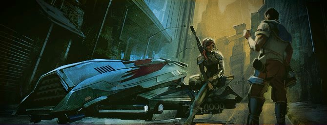
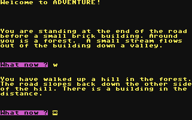
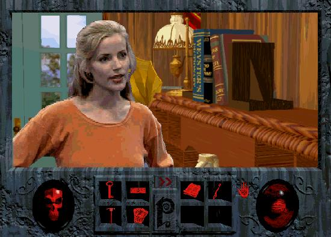
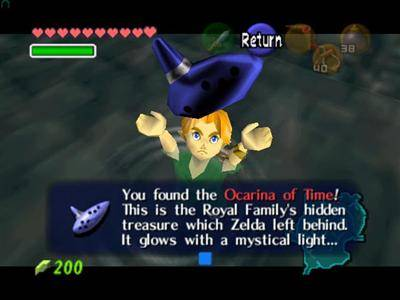

Il est temps de faire revenir les jeux d'aventure
L'article original est écrit par Ernest Adams publié par Gamasutra (novembre 1999).
L'auteur original n'est en aucun cas reponsable de la précision de cette traduction.

S'il y a bien une chose dont on n'entend plus beaucoup parler, c'est la « narration interactive ». À la Game Developers' Conference, il y avait beaucoup de tables rondes consacrées à ce sujet, et elles continuaient autour d'un verre au bar. C'était l'époque où les jeux d'aventure étaient rois. L'époque où LucasArts et Sierra On-line étaient au sommet de leur forme, les jeux d'aventure étaient les plus beaux et dominaient le reste du marché. Ils étaient amusants, effrayants, mystérieux et fascinants. Les jeux d'aventure présentaient des défis et exploitaient des domaines que les autres genres ne touchaient pas.
À cette époque, au début des années 90, les jeux de guerre étaient moribonds – c'était de petits jeux au tour par tour sur des grilles hexagonales qui se vendaient entre 5000 et 10000 exemplaires. Les jeux à la première personne étaient presque inexistants ; nous n'avions pas la technologie requise. Du côté de l'action, les side-scrollers faisaient la loi. Flight Simulators était un monde rudimentaire et très cubique. Les jeux d'aventure étaient très en avance sur les autres genres par leur richesse, leur profondeur, leurs personnages et leurs qualités artistiques, et cela se voyait dans les budgets du développement et du marketing. Beaucoup de gens travaillaient dessus et d'autres rêvaient d'en faire autant.
Les jeux d'aventure ont depuis sombré dans l'oubli, mis de côté pour être remplacé par des jeux de tirs en 3D et des jeux de stratégie en temps réel. De nos jours, le terme de "jeu d'aventure" lui-même est un peu devenu un abus de langage. C'est une contraction de « jeu à la Adventure », terme qui fait référence au tout premier jeu d'aventure, parfois appelé Colossal Cave, mais plus souvent connu sous le nom de Adventure. Pour s'offrir une vraie peur bleu ou avoir le cœur au bord des lèvres comme on l'attend dans une aventure, il est difficile de faire plus efficace que les jeux modernes en 3D comme Half-Life ou Thief : The Dark Project, surtout quand on y joue seul tard la nuit. Le terme « jeu d'aventure » désigne aujourd'hui un jeu avec des personnages, des énigmes et une intrigue qui se déroule, et généralement sans moments de stress intense.

Les cartes graphiques accélératrices 3D ont beaucoup influencé le déclin des jeux d'aventure. Les moteurs 3D permettent une grande liberté de mouvement, des perspectives illimitées, et par dessus tout, de la vitesse. L'accélération 3D est l'une des meilleures choses qui ne soit jamais arrivé à l'industrie du jeu vidéo, mais dans la hâte de faire des jeux toujours plus rapides, nous avons sacrifié la richesse visuelle dans nos décors. A quoi ça sert d'avoir un environnement de toute beauté, si c'est pour courir dans tous les sens en ne faisant attention qu'aux tirs ennemis ?
L'autre élément qui a éjecté les traditionnels jeux d'aventure hors des feux de la rampe, ce sont les jeux en ligne. Quand je suis entré pour la première fois dans l'industrie du jeu vidéo, la plupart des développeurs ignoraient l'existence d'Internet, et les jeux en ligne étaient une niche minuscule occupés par des sociétés telles que CompuServe et GEnie. Les éditeurs ne prenaient même pas la peine de s'y intéresser, et encore moins de le développer. Aujourd'hui, les jeux en ligne sont à la mode, et très peu de jeux sont produits sans mode multijoueur. Certains jeux, comme Quake et ses successeurs, sont principalement conçus pour le mode multijoueur et le mode solo est un peu la cinquième roue du carrosse.
Il y a une vieille blague qui dit qu'il y a deux catégories de personnes dans le monde, ceux qui divisent les personnes en deux catégories, et ceux qui ne le font pas. Dans l'ensemble, je fais parti de la deuxième – les généralisations sont responsables de nombreux problèmes dans ce monde. Cependant, je crois qu'il y a deux sortes de joueur, ceux qui aiment jouer à des jeux seuls, et ceux qui aiment jouer contre d'autres personnes.
Les jeux multijoueur, malgré leur popularité, ne sont pas fait pour tout le monde. Pour une raison simple, il leur faut (tada !) d'autres personnes, et ça veut dire que vous devez trouver le temps de pouvoir jouer ensemble. Si vous n'avez pas beaucoup de temps libre et préférez jouer par petites séances, vous pouvez vous permettre de quitter un jeu sans frustrer un autre joueur quelconque. Vous pourriez évidemment jouer à des jeux rapides comme le poker et le black-jack en ligne, mais si vous préférez jouer à des jeux longs sur de courtes périodes, vous avez besoin d'un grand jeu solo.
Une autre raison pour laquelle certaines personnes préfèrent jouer à des jeux seuls est une question de tempérament. Je joue à des jeux pour m'amuser, et je voudrais que les gens avec qui je joue s'amusent aussi. Je ne suis pas là pour vous fendre le cœur ; je suis là pour passer un bon moment ensemble. Je suis sûr qu'enfant nous avons tous déjà joué au moins une fois avec un gamin qui se délecte de ses victoires, qui boude de ses défaites et se comporte comme un crétin de manière générale. Beaucoup trop d'univers en ligne sont remplis de ce genre de personne : des adolescents psychotiques dont le seul plaisir dans la vie semble être de railler les étrangers. Je respecte les bonnes manières, et j'ai reçu assez de railleries dans les cours de récréations pour tout une vie, merci bien.
Mais la raison la plus importante pour jouer seul est le sentiment d'immersion. Beaucoup de gens sont attirés par les jeux parce qu'ils aiment être dans un monde fantastique ; ils aiment le côté exploration et découverte, autant du décor que de l'intrigue. Partager ce monde avec des gens réels tend à détruire ce doux rêve. C'est une chose de prétendre que vous êtes le puissant chevalier arpentant seul la forêt ; c'est autre chose si votre ami Joe est juste à côté de vous. Joe est un produit du 20ème siècle, et contrairement aux personnages fictifs dans le jeu, il ne parle pas avec des répliques à là Geoffrey Chaucer (NDT : un poète médiéval anglais) que les fantasmes médiévaux semblent exiger. ("Je vous salue, preux chevalier ! Que vous amène dans ces bois si périlleux à la tombée de la nuit ? J'ai ouïe dire des rumeurs d'un dragon en ce lieu.") Quand Joe parle, c'est comme si c'était Joe – qui est bien dans la vie réelle, mais dont le phrasé moderne sonne faux sur les terres mystiques d'Albion. Et partager un monde avec des étrangers est encore pire. Si je suis à la recherche de gloire, de fortune et d'amour pour ma bien-aimé, la dernière personne que je souhaite avoir comme compagnon est le sieur KewL DooD (NDT : « MeC KooL »).
Ce qui m'intéresse le plus dans les jeux ce sont les personnages, les lieux, les relations et les événements qui se déroulent, et avoir une chance de pouvoir interagir avec eux. J'ai joué jusqu'à la fin de StarCraft (en trichant parfois) non pas parce que j'ai été captivé par le jeu de guerre en lui-même, mais parce que je voulais savoir ce qui allait arriver à Jim Raynor et à Sarah Kerrigan. Je n'ai pas l'intention de manquer de respect aux mécaniques du jeu – je les ai beaucoup appréciées – mais ce qui m'a poussé à vouloir jouer à la trentaine de missions, c'était l'histoire.
Les jeux d'aventure sont la quintessence de l'expérience en solo. Beaucoup de jeux en mode solo sont en réalité des jeux multijoueur dans lesquels la machine est un substitut d'adversaire humain, et maintenant il est possible de jouer contre de vrais adversaires, c'est comme ça que fonctionne l'industrie du jeu vidéo. Mais les jeux d'aventure ne sont pas orientés autour de la compétition ; en fait, ce ne sont pas du tout des « jeux ». Il n'y a pas d'adversaires à proprement parler, ni de conditions de victoire si ce n'est de résoudre toute les énigmes et d'atteindre la fin de l'histoire. Les jeux d'aventure font la part belle aux actions d'un individu dans un monde complexe, le plus souvent un monde où on se sert plus de sa tête que de ses armes. Si vous jouez avec quelqu'un d'autre, c'est quelqu'un assis dans la même pièce que vous et qui vous aide à réfléchir – les jeux d'aventures récompensent la pensée latérale.
Le genre a tout de même ses problèmes, le pire d'entre eux étant les coûts de développement. Infocom et LucasArts sont devenus plutôt doués pour développer des moteurs de jeux réutilisables, respectivement la Z-Machine et SCUMM, mais ce qui coûte vraiment cher, ce sont les graphismes et l'audio. Les histoires doivent avoir du contenu, et les histoires interactives ont besoin de trois à dix fois plus de contenu que les histoires linéaires. Des éditeurs ont investi des sommes colossales dans le développement de leurs jeux d'aventure (Phantasmagoria est sorti sur sept CD-ROM) et ils n'ont tout simplement pas calculé les recettes qu'il aurait fallu pour compenser leurs dépenses. Quand vous pouvez gagner au moins autant d'argent en développant un Quake-like pour une bouchée de pain, pourquoi s'embêter à développer un jeu d'aventure ?

En dépit de tout cela, je pense qu'on doit leur redonner une chance. Il y a encore un marché pour les jeux au rythme lent où le challenge est surtout mental. Rempli de casse-tête intelligents et de plaisirs visuels, les jeux d'aventure ont toujours été populaires auprès des femmes. Bien que la plupart des femmes utilisent bien plus souvent un ordinateur et jouent plus souvent à des jeux qu'autrefois, je crois que l'industrie a fait un pas en arrière pour ce qui est d'offrir un divertissement qui puisse plaire au plus grand nombre de joueuses. L'accent mis actuellement sur les jeux de courses, de vol ou de tir (tout ça grâce à l'accélération 3D, bien sûr) n'a pas vraiment intéressé beaucoup de femmes ; encore moins le fait de pinailler sur la gestion de production d'armes qui prend tellement de temps dans les jeux de stratégie en temps réel.
L'autre marché pour lequel les jeux d'aventure sont parfaits est celui des jeunes enfants, particulièrement si le jeu ne demande pas beaucoup de dextérité. Les enfants s'évadent très facilement du monde réel (je n'arrive pas à croire que plus jeune j'aimais Le Sous-marin de l'apocalypse (NDT : un film américain des années soixante)), et ils aiment comprendre des choses tout comme les adultes. L'énorme succès de la refonte de The Legend of Zelda sur Nintendo 64 démontre manifestement qu'il existe encore un marché, et les moteurs 3D ont aussi tout autant à apporter aux jeux d'aventures qu'aux autres genres.

Nous allons encore devoir faire face à cette question des coûts de développement, mais avec des entreprises qui dépensent couramment un million de dollars ou plus dans leurs jeux, ce n'est pas comme si les autres genres étaient raisonnables non plus. La voix-off et les cinématiques que l'on retrouve dans les jeux d'aventure sont maintenant inclus dans toute sorte de jeux. Le coût de fabrication des cinématiques est le même pour un jeu de guerre ou un jeu d'aventure.
Les jeux d'aventure plaisent à un public qui n'est pas focalisé sur la taille d'une explosion ou de la vitesse du moteur, un public que nous ignorons la plupart du temps. Mais ces gens veulent jouer à des jeux aussi. Il est temps pour les jeux d'aventure de revenir.
Ajouter un commentaire
Commentaires

Petit commentaire pour dire que je suis soulagé de voir enfin quelqu'un faire l'apologie des jeux offline! Même si je suis plus RPG que jeux d'aventures (j'ai tout de même adoré Another Code et Hotel Dusk sur DS), je suis lassé de voir qu'aujourd'hui tous les nouveaux jeux ne sont bien notés que pour leur mode multijoueur alors même que leur scénario se résume à trois missions pliées en 2h (je parle surtout pour les jeux de guerre) et l'arrivée des DLC (contenus téléchargeables) n'a pas arrangé les choses mais c'est un autre sujet. Bref, aux jeux offline!
Bonjour et bonnes fêtes à tous,
La pertinence de ce genre même de nos jours n'est plus à prouver (Gemini Rue, Phoenix Wright, Hotel Dusk, Overclocked: a history of violence, Downfall, etc.) pourtant, il lui manque certainement des titres de grande envergure marketing.
Aujourd'hui, deux innovations majeures sur le marché du high-tech grand public sont déjà présentes auprès du public des femmes (voire au-delà) :
1 ) Microsoft Kinect qui grâce à la gestuelle ou la reconnaissance vocale, gagnerait une importante crédibilité ludique en ayant recours aux licences de type Myst-like ou autres jeux d'aventure/réflexion au rythme très lent,
2 ) La grande résolution des écrans des tablettes ou téléviseurs HD, utilisables dans des lieux de meilleur confort (canapés, lits), qui permettrait le retour vers ces jeux qui sont aussi des jeux de détail, de pixel.
J'adore votre blog, une mine d'information pour les amateurs comme moi et ça me permet d'avoir pas mal d'idées pour plus tard (qu'en j'aurais dépassé le stade de programmation d'un snake^^).
Pourtant il me semble que les jeux d'aventure n'ont pas disparus mais plutôt évolué, pour ma part je n'ai quasiment jamais joué a des jeux comme "Phantasmagoria" par contre les Zelda-like il y en a une pelle et j'ai l'impression (peut être a cause de l'industrie japonaise) que le genre aventure s'est mélangé avec les RPGs.